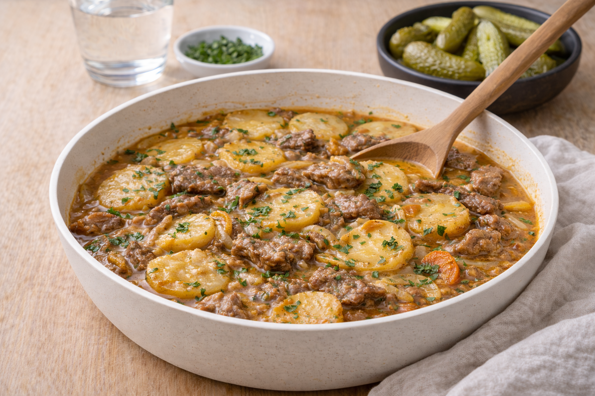

Sjömansbiff
Sjömansbiff med potatis och lök som sköter sig själv i grytan. Värmande husmanskost.

Ingredienser
- 600 g högrev/innanlår, skivat
- 800 g potatis, skivad
- 2 gula lökar, skivade
- 3 dl köttbuljong
- 1 lagerblad
- Salt och svartpeppar
- Smör/olja till stekning
Så lagar du
- Bryn köttet snabbt och krydda med salt och peppar.
- Varva potatis, lök och kött i en gryta. Lägg i lagerblad.
- Häll på buljong så det nästan täcker potatisen.
- Koka under lock på låg värme 45–60 minuter tills potatis och kött är mjukt.
- Smaka av och servera.
Tips & variationer
- Låt den gärna stå och dra 10 minuter innan servering.
- Servera med inlagda rödbetor eller gurka.